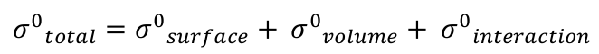
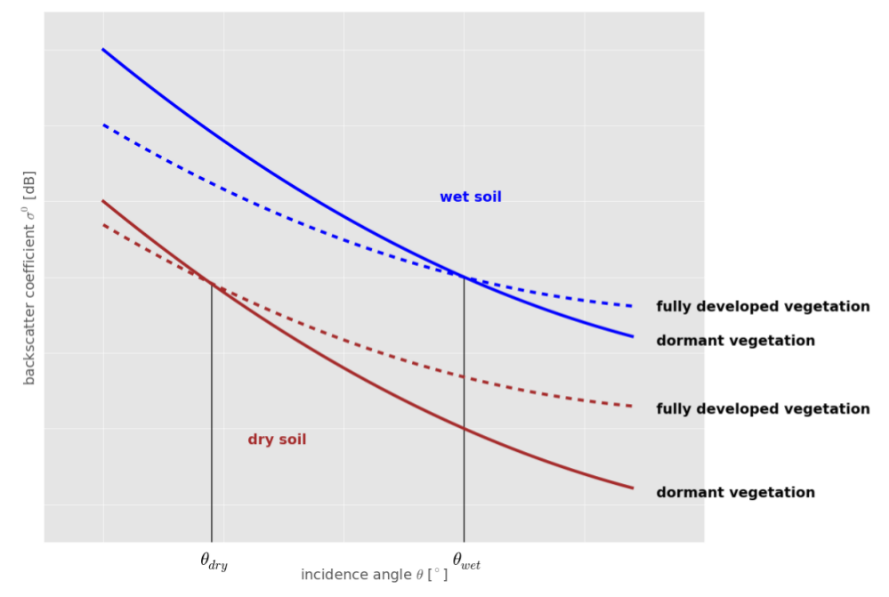

Soil Moisture
Lecture 5: Vegetation Correction

Funded by:


Backscatter from vegetated surfaces
The total backscatter coefficient recorded over vegetated surfaces is a mixture of three scattering mechanisms:
- surface scattering from the underlying soil surface
- volume scattering from the vegetation canopy
- multiple-path interactions between tree trunks and soil surface
Source: Bartalis (2009)
Mathematical formulation of the total backscatter:
Interaction term
represents multi-path interactions between tree trunks and the soil surface
in general much smaller than the volume and surface scattering term
no significant contribution to the total backscatter
surface and volume scattering terms
bare soil backscatter decreases rapidly with increasing incidence angle (except for very rough surfaces)
volume scattering from vegetation canopy is quite uniform across a large range of incidence angles
w. r. t. growing vegetation canopy, the total backscatter may decrease or increase, depending on whether the attenuation of the bare soil scattering is more important than the enhanced contribution of the volume scattering term of the vegetation canopy, or vice versa.
dry and wet crossover angles
...specific incidence angles, at which the total backscatter of dormant vegetation (dominated by surface scattering) and the backscatter of fully grown vegetation (dominated by volume scattering) are equal
at the crossover angles, the magnitude of the total backscatter depends only on the soil moisture condition
the dry crossover angle is found at lower incidence angles (~25°) than the wet crossover angle (~40°)
the crossover angle concept
...allows to account for vegetation effects controlling the total backscatter, if the crossover angles are chosen correctly.
Source: SCIRoCCo Handbook